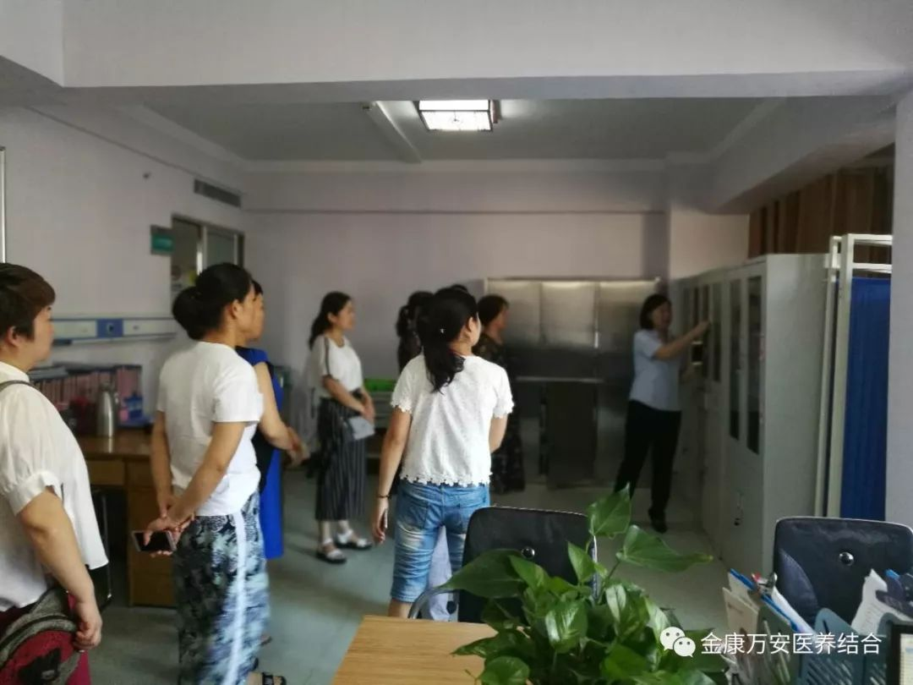
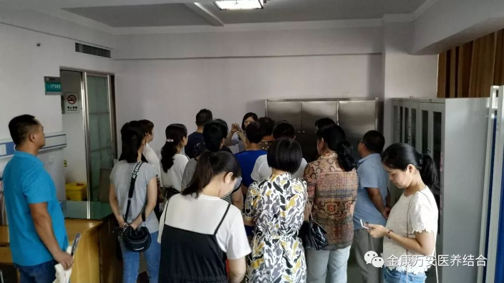
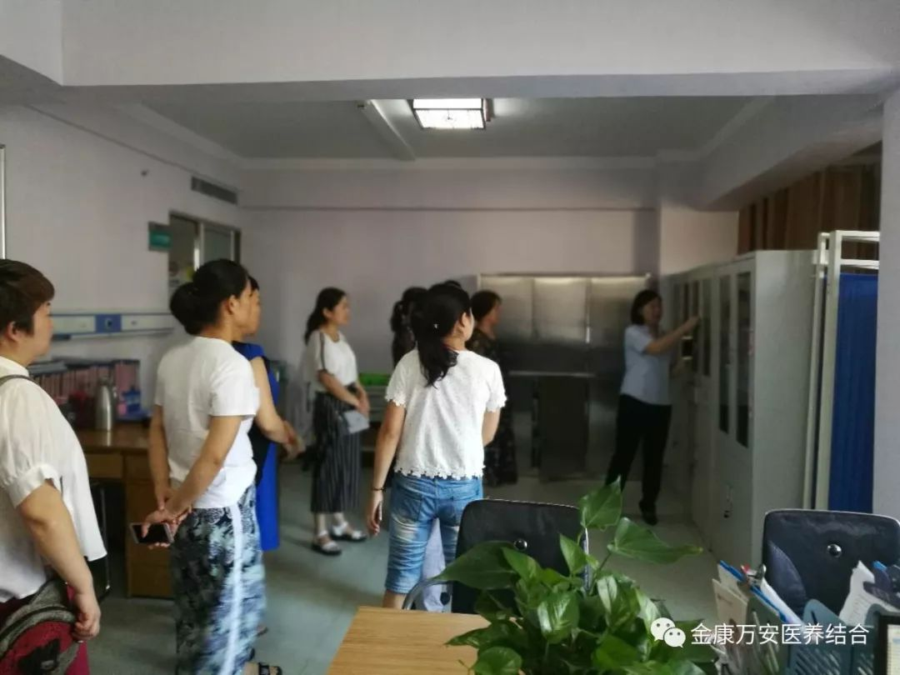
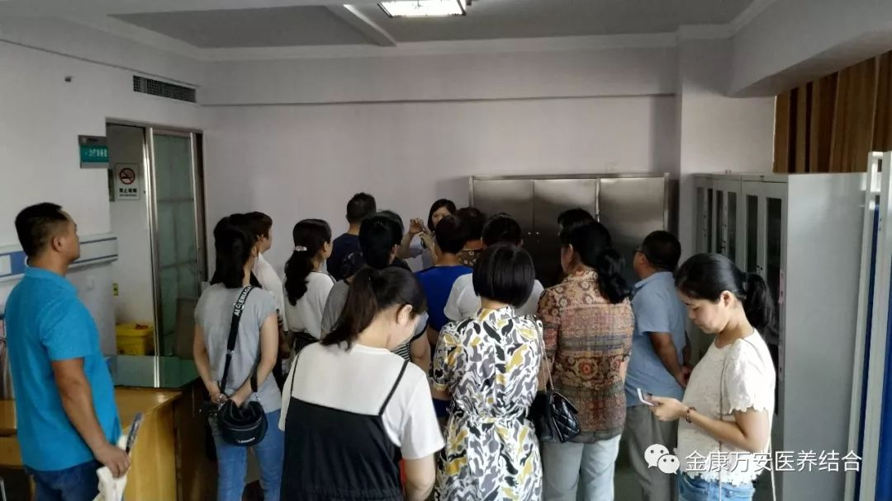

万安医院新闻
源汇区卫计委医疗机构医疗废物规范处置培训会在漯河万安医院召开
人气: "" 时间：2018-08-20
为进一步规范医疗卫生机构医疗废物管理工作，防止疾病传播，保护环境，保障群众的身体健康， 8月20日下午，漯河市源汇区卫计委在漯河万安医院会议室组织召开“源汇区卫计委医疗机构医疗废物规范处置培训会”。源汇区属各医疗卫生单位负责人、区管各类公共场所经营单位负责人和卫生管理人员及区卫生计生监督所等100余人参加此次培训。源汇区卫计委副主任李幸福、源汇区卫生计生监督所长李友茂出席会议并讲话。

培训开始之前，由业务院长银令令等工作人员带领源汇区属各医疗卫生单位负责人对我院整体环境及整体布局进行参观。

 





会议传达了省市有关文件精神，通报了源汇区医疗机构医疗废物处置工作现状和存在的问题，部署了源汇区医疗废物专项整治工作安排，就当前医疗废物工作提出了具体要求。

会议要求各医疗卫生单位：一是要高度重视医疗废物处置工作的重要性；二是要提高思想认识，认真履职履责，按照上级统一部署，迅速行动，开展全方位排查，切实加强医疗废物处置；三是要加大监督检查力度，同时要求监督执法机构依法查处违法违规行为，始终保持高压态势，遏制因医疗废物处置处理不当造成的环境污染行为的发生。